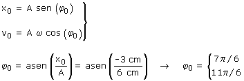
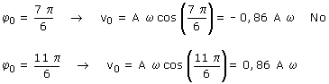

Ecuaciones del movimiento:
 |
Parametros: A = 12 cm, ω = π rad/s φ0, incógnita |
Aplicación: (Situación inicial)
Datos: t0 = 0, x0 = 0.28 cm, v0 = 178 cm/s, Incógnita: φ0

No se añade k·2π a las soluciones porque buscamos la fase en la primera oscilación (k = 0)
Para decidir cual de los dos valores es el correcto se comprueba la velocidad correspondiente:

Luego la fase inicial es: 11·π/6 (•)